When you complete this learning material, you will be able to:
Explain combustion control methods and safeguard controls.
You will specifically be able to complete the following tasks:
Describe, using a sketch, the combustion control arrangements in a steam generator.
The amount of fuel that is supplied to a boiler furnace, called the firing rate , is in proportion to the current loading on the boiler or the load index . The combustion control system attains a balance between the energy input to the boiler (the firing rate) and the energy that is withdrawn (the load index). As a rule, combustion controls use the steam pressure as the measure for an appropriate energy balance. The pressure drops as the firing rate is reduced and increases as the load index is reduced. Combustion controls, therefore, use steam pressure as the primary process variable they are designed to control. The actual design of the control system, and its functioning, depends on the nature of the boiler loading, the fuel in use, and the operating philosophy of the plant in question.
Several of the figures used in this module utilize standard symbols for describing various control loop components. Fig. 1 provides an overview of the conventional symbols used.
![FIT symbol: A circle with 'FIT' text inside. LIT symbol: A circle with 'LIT' text inside. A symbol: A dashed diamond with 'A' text inside. f(x) symbol: A trapezoid with 'f(x)' text inside. A/T symbol: A dashed diamond divided into two triangles, with 'T' in the top and 'A' in the bottom. Delta symbol: A rectangle with a Greek delta symbol inside. K symbol: A rectangle with 'K' text inside. K/Integral symbol: A rectangle divided into two parts, with 'K' on the left and an integral sign on the right. Sigma symbol: A rectangle with a Greek sigma symbol inside. f(t) symbol: A rectangle with 'f(t)' text inside.](163688ca8da9787f5d48edd68d8cc75b_img.jpg)
| Flow Indicating Transmitter | |
| Level Indicating Transmitter | |
| Manual Signal Generator | |
| Final Controlling Function | |
| Hand / Automatic Control Station | |
| Subtracting Unit | |
| Proportional Controller | |
| Proportional Plus Integral Controller | |
| Summer | |
| Signal Lag Unit |
Figure 1
Control Loop Symbols
A typical control system for an oil and/or gas fired boiler is shown in Figure 2.
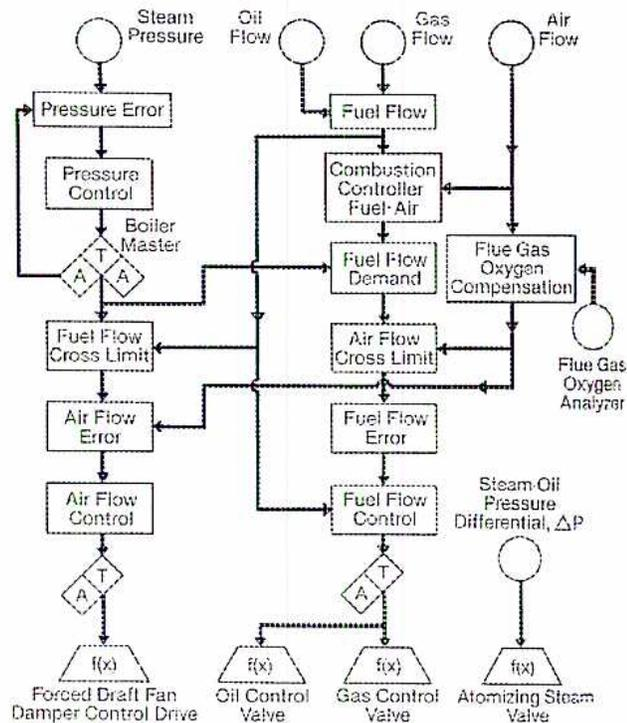
The diagram illustrates a boiler combustion control system. At the top, four input signals are shown: Steam Pressure, Oil Flow, Gas Flow, and Air Flow. Steam Pressure enters a 'Pressure Error' block, which feeds into a 'Pressure Control' block. The output of 'Pressure Control' goes to a 'Boiler Master' block (containing a summing junction with 'T' and 'A' inputs). The 'Boiler Master' output feeds into a 'Fuel Flow Cross Limit' block and an 'Air Flow Cross Limit' block. 'Oil Flow' and 'Gas Flow' enter a 'Fuel Flow' block, which feeds into a 'Combustion Controller Fuel-Air' block. 'Air Flow' enters a 'Flue Gas Oxygen Compensation' block, which also receives input from a 'Flue Gas Oxygen Analyzer'. The 'Combustion Controller Fuel-Air' output feeds into a 'Fuel Flow Demand' block. The 'Fuel Flow Demand' output feeds into a 'Fuel Flow Cross Limit' block and an 'Air Flow Cross Limit' block. The 'Fuel Flow Cross Limit' output feeds into an 'Air Flow Error' block, which feeds into an 'Air Flow Control' block. The 'Air Flow Control' output feeds into a summing junction (containing 'T' and 'A' inputs), which then feeds into a function block \( f(x) \) labeled 'Forced Draft Fan Damper Control Drive'. The 'Air Flow Cross Limit' output also feeds into a 'Fuel Flow Error' block, which feeds into a 'Fuel Flow Control' block. The 'Fuel Flow Control' output feeds into a summing junction (containing 'T' and 'A' inputs), which then feeds into a function block \( f(x) \) labeled 'Oil Control Valve'. A 'Steam-Oil Pressure Differential, \( \Delta P \) ' input feeds into a function block \( f(x) \) labeled 'Atomizing Steam Valve'. A 'Gas Control Valve' function block \( f(x) \) is also shown, receiving input from the 'Gas Flow' block.
Figure 2
Boiler Combustion Control
In Fig. 2, the boiler master controller uses steam pressure as the controlled variable for fuel flow and airflow. Both fuel flow and airflow trim the fuel demand signal. In this particular case, fuel flow may be inferred from fuel header pressure and airflow may be inferred from the differential pressure between the wind box and the furnace. If multiple burners are used, airflow is more likely measured with a dedicated primary measuring element such as pitot tubes or a venturi.
Fig. 3 shows a typical system for pulverized coal firing. The firing rate controls the steam pressure, which both fuel flow and airflow trim. Fuel flow adjusts the coal feeder feed rates, and is compared to the firing rate to generate a pulverizer master controller demand signal.
![Block diagram of the Pulverized Coal Control System. The diagram shows the flow from Firing Rate Demand and Coal Feeder Speed to Total Coal Flow, then to Firing Rate Error, and finally to Corrected Firing Rate Demand. This demand is compared with Minimum Pulverizer Loading to drive the Pulverizer Master. The Pulverizer Master output goes to Pulverizer Group No. 1 Master, which in turn drives Individual Pulverizer Bias. This bias is added to Pulverizer Group Secondary Air Flow to produce Pulverizer Group Total Air Flow. This total air flow is compared with Flue Gas Oxygen Compensation (from a Flue Gas Oxygen Analyzer) to produce Total Air Flow Error. This error is compared with Total Air Flow Minimum Limit to drive Total Air Flow Control, which goes to Secondary Air Dampers. Simultaneously, Pulverizer Group Total Air Flow is compared with Primary Air Flow to produce Primary Air Flow Error. This error is compared with Primary Air Flow Minimum Limit to drive Primary Air Flow Control, which goes to Primary Air Dampers. Both Total Air Flow and Primary Air Flow are also inputs to a Low Select Auctioneer, which drives the Coal Feeder Speed Control.](f9a14fbfecbd7d059226cc93677d721b_img.jpg)
graph TD
FRD[Firing Rate Demand] --> TC[Total Coal Flow]
CFS[Coal Feeder Speed] --> TC
FRED[Firing Rate Error] --> TC
FRED --> CFRED[Corrected Firing Rate Demand]
FRED --> FRED_RB[Firing Rate Error to Load Runback]
CFRED --> MPL[Minimum Pulverizer Loading]
MPL --> PM[Pulverizer Master]
PM --> PG1M[Pulverizer Group No. 1 Master]
PG1M --> IPB[Individual Pulverizer Bias]
PG1M --> PGSAF[Pulverizer Group Secondary Air Flow]
PGSAF --> PGAF[Pulverizer Group Total Air Flow]
FGOA[Flue Gas Oxygen Analyzer] --> FGC[Flue Gas Oxygen Compensation]
PGAF --> FGC
FGC --> TAFE[Total Air Flow Error]
TAFE --> TAML[Total Air Flow Minimum Limit]
TAML --> TFC[Total Air Flow Control]
TFC --> SAD[To Secondary Air Dampers]
PGAF --> PAE[Primary Air Flow Error]
PAE --> PALM[Primary Air Flow Minimum Limit]
PALM --> PAC[Primary Air Flow Control]
PAC --> PAD[To Primary Air Dampers]
PGAF --> LA[Low Select Auctioneer]
PAE --> LA
LA --> CSC[To Coal Feeder Speed Control]
Figure 3
Pulverized Coal Control System
The pulverizer master output is directed to the coal feeders to control fuel flow to the primary and secondary combustion air supplies to maintain an appropriate air/fuel ratio, and also helps to control total airflow. A number of secondary loops and limiting circuits are used to maintain the primary air ratio, total air/fuel ratio, pulverizer minimum loading, minimum primary airflow, and minimum total airflow all in the interest of safe, stable combustion.
Cyclone-fired boilers use a combustion control system which is similar but more sophisticated than that used for pulverized coal with air ratios being maintained for each cyclone in service. Circulating fluidized bed furnaces also require a complex control system because of the need to integrate the mass and distribution of the fluidized bed solids.
The amount of combustion air supplied to a boiler furnace is in proportion to the amount of fuel being burned. This proportioning can be attained either manually or automatically. The amount of air supplied must be in excess of what is required for
perfect combustion (stoichiometric) to ensure that sufficient oxygen contacts all the fuel to support complete combustion. However, the amount of excess air must be kept to a minimum, or it reduces the boiler's combustion efficiency. Conversely, if the excess air is insufficient, incomplete combustion results, reducing boiler efficiency and forming combustible products in the flue gases which present an explosion hazard in the furnace and gas passes.
To determine and control the amount of air required for varying boiler loads, three basic systems are used for combustion control systems. They are: steam flow/airflow, fuel flow/airflow, and gas analysis.
The most direct way to determine whether the air and fuel flows are in the correct proportion is to measure them and adjust them when necessary to maintain the correct ratio. With certain types of fuel, especially solid fuels such as coal, it is difficult to measure fuel flow. In these cases, the steam flow is measured and used as an indication of fuel consumption or heat absorption. The airflow is also measured and is maintained in a certain ratio with the steam flow. In this way, a ratio is indirectly maintained between the airflow and the fuel flow.
A block diagram of a steam flow/airflow combustion control system is shown in Fig. 4.
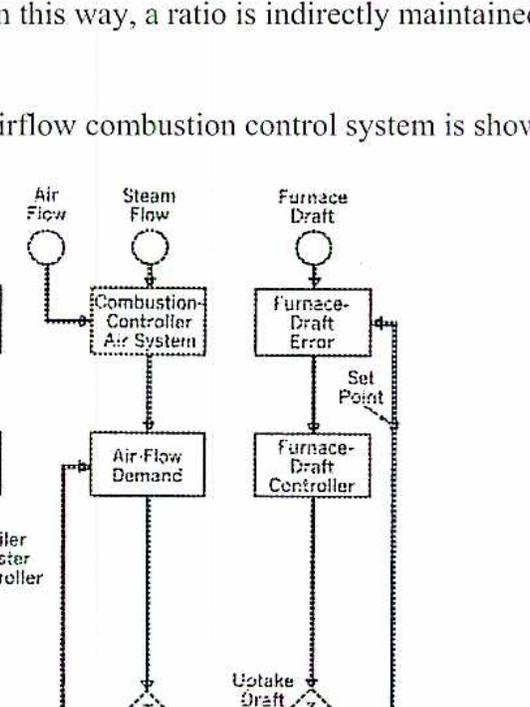
The diagram shows a control loop for a boiler system. It starts with four measurement points at the top: Steam Pressure, Air Flow, Steam Flow, and Furnace Draft. 1. Steam Pressure feeds into a 'Steam-Pressure Error' block, which then goes to a 'Steam-Pressure Controller'. This output goes to a 'Boiler Master Controller' which controls the 'Stoker-Feed-Control Drive' via a function block f(x). 2. Air Flow and Steam Flow feed into a 'Combustion-Controller Air System'. This feeds into an 'Air-Flow Demand' block. The Boiler Master Controller also provides input to this demand block. The output goes through a function block f(x) to the 'Forced-Draft-Fan Damper-Control Drive'. 3. Furnace Draft feeds into a 'Furnace-Draft Error' block (which also receives a 'Set Point'). This feeds a 'Furnace-Draft Controller', which then controls the 'Uptake Draft' via a function block f(x). Dashed lines indicate signal paths, and diamond-shaped symbols with 'T', 'A', and 'M' likely represent Transfer, Auto, and Manual control stations.
Figure 4
Steam Flow / Airflow
Page 306
Image: Logo
In Fig. 4, upon a change in boiler pressure, the steam pressure transmitter simultaneously signals a demand for change in both fuel and airflow through the steam pressure controller and boiler master controller. The combustion controller, which receives signals from the steam flow and airflow transmitters, maintains the correct air/fuel ratio. A change in airflow to the furnace also causes a change in furnace draft, and the furnace draft controller changes the uptake draft to maintain the correct furnace draft.
The fuel flow/airflow system can be used where it is practical to measure the fuel flow to the furnace, as well as the airflow. These measurements are then used to maintain the correct fuel/air ratio.
Fig. 5 shows a fuel flow/airflow control system for a dual fuel boiler which burns oil or gas, separately or together.
![Block diagram of a fuel flow/airflow control system for a dual fuel boiler. The diagram shows four input transmitters: Steam Pressure, Oil Flow, Gas Flow, and Air Flow. Steam Pressure feeds into a 'Pressure Error' block, which then feeds into a 'Pressure Control' block. The output of 'Pressure Control' goes to a 'Boiler Master' (containing a summing junction 'A' and a transfer function 'T'). The 'Boiler Master' output splits into two paths: one goes to a 'Fuel-Flow Cross Limit' block, and the other goes to a 'Fuel-Flow Demand' block. 'Oil Flow' and 'Gas Flow' both feed into a 'Fuel Flow' block, which then feeds into a 'Combustion Controller-Fuel/Air' block. The 'Combustion Controller-Fuel/Air' output goes to the 'Fuel-Flow Demand' block. The 'Air Flow' transmitter feeds into an 'Air-Flow Cross Limit' block. Both the 'Fuel-Flow Demand' and 'Air-Flow Cross Limit' outputs feed into a 'Fuel-Flow Error' block. The 'Fuel-Flow Error' block output goes to a 'Fuel-Flow Control' block, which then feeds into a summing junction 'A' with a transfer function 'T'. The output of this junction goes to an 'f(x)' block, which controls the 'Oil Control Valve' and 'Gas Control Valve'. The 'Air-Flow Cross Limit' output also feeds into an 'Air-Flow Error' block, which then feeds into an 'Air-Flow Control' block. The output of 'Air-Flow Control' goes to a summing junction 'A' with a transfer function 'T', which then feeds into an 'f(x)' block controlling the 'Forced-Draft-Fan Damper-Control Drive'. A 'Steam-Oil Pressure Differential, ΔP' transmitter feeds into an 'f(x)' block controlling the 'Atomizing-Steam Valve'.](49ee89a1d5852ab005dbbab6de09a8a6_img.jpg)
Figure 5
Fuel Flow / Airflow
In the system in Fig. 5, the fuel and airflows are controlled according to changes in boiler steam pressure. The steam pressure transmitter signals through the boiler master to both the forced draft fan and the fuel control valves. The fuel flow is then readjusted to maintain the correct air/fuel ratio by the fuel/air (combustion) controller.
Gas analyzers can be used to maintain correct air/fuel ratios. Flue gas samples are continuously analyzed for the amounts of oxygen and combustibles that are present in the flue gas. The percentage of oxygen in the flue gas relates to the air/fuel ratio, and a signal from the analyzer can be used for control purposes in adjusting the airflow to the furnace.
Fig. 6 shows this type of control system as it is applied to a coal-fired cyclone furnace. When there is a change in firing rate demand due to a change in boiler pressure, a signal change is sent to the coal feeder speed controller and the cyclone air damper. The airflow is readjusted to maintain the correct air/fuel ratio using a signal from the flue gas oxygen analyzer.
![Figure 6: Control System With Gas Analysis. This is a complex block diagram showing the control logic for a coal-fired cyclone furnace. At the top, 'Firing-Rate Demand' and 'Firing-Rate Error to Load' are inputs to a 'Corrected Firing-Rate Demand' block. This block also receives feedback from 'Coal-Feeder Speed'. The corrected demand goes to a 'Minimum Cyclone Firing Rate' block, which then feeds into a 'Cyclone Master' selector. The master selector directs signals to 'Cyclone No. 1' and 'To Other Cyclones'. 'Cyclone No. 1' has an 'Individual Cyclone Bias' block. The bias and a signal from 'Total Flow Control' (which receives input from 'From Other Coal Feeders') are inputs to 'Air-Flow Cross Limit'. This limit feeds into 'Feeder-Speed Cross Limit', which then goes to 'Feeder-Speed Control'. 'Feeder-Speed Control' outputs to 'Coal-Feeder Speed'. Simultaneously, 'Primary Air Flow', 'Secondary Air Flow', and 'Air Temp' are inputs to 'Total Cyclone Air Flow'. This total flow and a signal from 'Flue Gas-Oxygen Compensation' (driven by a 'Flue-Gas-Oxygen Analyzer') are inputs to 'Cyclone Air-Flow Error'. This error feeds into 'Cyclone Air-Flow Control', which outputs to 'To Cyclone Air-Velocity Damper'. Various 'A' (selector) and 'T' (transfer) symbols are used throughout the diagram to manage signal flow between different control paths.](d0abac95583b52a3b35f74a215567334_img.jpg)
Figure 6
Control System With Gas Analysis
An advantage of this approach is that the operating staff has a direct indication of boiler combustion efficiency because the flue gas oxygen content is directly related to the amount of furnace excess air. A disadvantage is that the analyzer must be located in a hot, dirty, and corrosive environment and may be a high maintenance item.
Fuel flow/airflow control is common for gas and oil-fired boilers because the fuel/air ratio is maintained even when the boiler load is changed abruptly. However, this system is inaccurate when the heating value of the fuel changes and so is less satisfactory for solid fuels which can change considerably in a short period of time. When firing with fuels that have variable heating values, incorporate another variable to trim the output signal to maintain a proper air/fuel ratio. Such variables in use include flue gas oxygen analysis, steam flow, or megawatt generation.
Steam flow/airflow systems are inaccurate during large changes in boiler load because of the temporary need to overfire or underfire the boiler. Errors in the air/fuel ratio can occur as a result of changes in feedwater temperature or steam temperature because changes to feedwater or steam temperature affect the relationship of steam flow to heat input. Variations of feedwater or steam temperature affect heat transfer of the economizer or superheater. This may require a temperature compensating loop in the control system or some form of manual compensating input.
Another combustion control system philosophy that is sometimes used is megawatt generation/airflow. In an electric generating plant, the megawatts generated represent a direct index of heat input to the generating unit. A megawatt generation/airflow system can be a more accurate control system than steam flow/airflow especially when feedwater or steam temperatures fluctuate.
Explain series, parallel, and series/parallel combustion control.
As discussed in the last learning objective, combustion control systems use steam pressure as the setpoint for the energy balance between the firing rate and the load index. If steam demand increases, the firing rate increases to maintain the required steam pressure. If steam demand drops, the combustion of fuel is reduced accordingly. Combustion control systems are categorized as on/off , positioning , and metering .
On/Off systems, also called two position systems, are found only on firetube and small watertube boilers. The main control element is a pressure switch, often called a pressuretrol or pressurestat which the boiler output steam pressure activates. When the pressure drops to a preset “cut-in” value, then the pressure switch starts up the draft fans and the burner. When the pressure reaches a preset “cutout” value, then the pressure switch shuts down the boiler again.
Where multiple boilers are used in a single plant, on/off control may result in a situation where one boiler is taking most of the plant load. This is because of the difficulty adjusting the pressuretrols accurately enough to allow for proper load sharing. This can be resolved by:
The disadvantages of this approach are that the boiler operation is inefficient and that the boiler pressure is allowed to vary appreciably between the cut-in and cutout points. The heat storage in the boiler water is used to supply steam during the “off” period by flashing off water in the boiler as the pressure falls. If the steam pressure needs to be maintained within a narrower range than on/off control can achieve, positioning control is the next logical step.
In this system, the master controller responds to changes in steam pressure by positioning draft dampers and the fuel valve using actuators to maintain the firing rate in proportion to boiler load.
The simplest arrangement for positioning control has the master controller operating a jackshaft. The jackshaft is linked to the damper and fuel valve and operates them in parallel.
Another simple arrangement has the master controller send a signal in parallel to the damper actuator and to the fuel valve actuator. Including a manual air/fuel ratio adjustment improves this arrangement. Fig. 7 shows these various positioning control arrangements.
![Figure 7: Positioning Control Arrangements. The diagram shows three different control schemes for a boiler. The top scheme uses a 'Control Drive' connected to a 'From Pressure Controller' input, which operates a 'Jackshaft'. The jackshaft is mechanically linked to a 'Damper Positioner' and a 'Fuel-Flow Control Valve'. The middle scheme shows a 'From Pressure Controller' input connected to both a 'Damper Positioner' and a 'Fuel Valve' in parallel. The bottom scheme shows a 'From pressure controller' input connected to a 'Damper Positioner' and a 'Fuel / Air Ratio Adjustment' block. The output of the adjustment block is connected to a 'Fuel Valve'.](042733dc5e8e7f5f30b60adba3266cde_img.jpg)
Figure 7
Positioning Control Arrangements
A disadvantage of positioning control is that it assumes that a linear relationship exists between the positioning of the fuel and air final control elements and the resulting flow rates. This linearity is often not true in practice. Metering control actually measures the air and fuel flows and sets them according to the indicated steam pressure.
In the metering control system, the master controller sends signals to the draft dampers and fuel valve as is done in the positioning system. However, with metering control, these controller output signals are modulated in proportion to actual fuel and airflows which are measured or metered. In this way, an optimum fuel/air ratio is maintained over the entire operating range. Various combustion control strategies are examples of metering control that differ from each other in the manner in which the metering function is carried out. Metering systems are sub-classified as series , parallel , or series/parallel control systems based on the way in which the output signal from the master controller is utilized. A block diagram of a series arrangement is shown in Fig. 8.
![Block diagram of a series control system for a boiler. The diagram shows a sequential flow of control signals. It starts with a 'MASTER PRESSURE CONTROLLER' at the top left, which connects down to an 'AIR FLOW CONTROLLER'. The 'AIR FLOW CONTROLLER' connects down to a 'DAMPER ACTUATOR' and also has a horizontal connection to an 'AIR FLOW TRANSMITTER' located to its right. The 'AIR FLOW TRANSMITTER' connects down to an 'AIR/FUEL RATIO ADJUSTMENT' block. This block connects down to a 'FUEL FLOW CONTROLLER'. The 'FUEL FLOW CONTROLLER' connects down to a 'FUEL VALVE ACTUATOR' and also has a horizontal connection to a 'FUEL FLOW TRANSMITTER' located to its right. The 'FUEL FLOW TRANSMITTER' connects down to the 'FUEL FLOW CONTROLLER'.](af7916c89a458fdab6c3f443217388ae_img.jpg)
graph TD
MPC[MASTER PRESSURE CONTROLLER] --> AFC[AIR FLOW CONTROLLER]
AFC --> DA[DAMPER ACTUATOR]
AFC --> AFT[AIR FLOW TRANSMITTER]
AFT --> ARA[AIR/FUEL RATIO ADJUSTMENT]
ARA --> FFC[FUEL FLOW CONTROLLER]
FFC --> FVA[FUEL VALVE ACTUATOR]
FFC --> FWT[FUEL FLOW TRANSMITTER]
FWT --> FFC
Figure 8
Series Control
In Fig. 8, upon a change in boiler pressure, the master controller output signal changes, causing the airflow controller to adjust the damper position through the damper actuator. The airflow transmitter senses the change in airflow, and a feedback signal is sent to the airflow controller. This signal is also sent through the air/fuel ratio adjustment to the fuel flow controller which repositions the fuel valve using the fuel valve actuator. The fuel flow transmitter then senses the change in fuel flow, and a feedback signal is sent to the fuel flow controller. The amount that the fuel flow changes with a change in airflow depends upon the air/fuel ratio adjustment.
This system is called series control because the airflow is adjusted first followed by the fuel flow in a definite sequence or series of events. In some cases, fuel flow is adjusted first followed by airflow. If the boiler uses a fuel bed , such as an underfeed stoker provides, then air supply must lead fuel supply. If suspension burning is used, with the fuel in suspension in the air stream, then fuel supply usually leads air supply. This is not always the case due to the risk of producing a fuel-rich atmosphere in the boiler furnace which could be explosive. Examples of suspension burned fuels are gas, pulverized coal, and oil.
The parallel system of metering control is more commonly used than the series system, because it offers greater response to load changes as air and fuel flow corrections are made simultaneously. A block diagram of a simple parallel system is shown in Fig. 9.
![Figure 9: Parallel Control block diagram. A central 'Steam-pressure transmitter/controller with setpoint' block has arrows pointing to a 'Fuel/air ratio adjustment' block, a 'Fuel-flow controller', and an 'Air-flow controller'. The 'Fuel-flow transmitter' points to the 'Fuel-flow controller', which in turn points to the 'Fuel-flow control drive'. The 'Air-flow transmitter' points to the 'Air-flow controller', which points to the 'Air-flow control drive'. The 'Fuel/air ratio adjustment' block sends a 'Fuel-flow demand signal' to the 'Fuel-flow controller' and an 'Air-flow demand signal' to the 'Air-flow controller'.](4801720824e4b5e2361a5564f91cfb70_img.jpg)
Figure 9
Parallel Control
If the steam pressure drops from the set point of the steam pressure transmitter/controller, this controller transmits a demand signal to the airflow controller which compares the new airflow requirement with the metered feedback signal from the airflow transmitter. The resulting corrective output signal is sent to the airflow control drive, which opens dampers or increases fan speed until the actual airflow matches the demand signal. At the same time, the signal from the steam pressure transmitter/controller is also being received by the fuel flow controller, which compares the new fuel flow requirement with the metered feedback signal from the fuel flow transmitter. The resulting corrective signal is sent to the fuel flow control drive which adjusts the fuel valve until the actual fuel flow matches the demand signal.
This system is called parallel control because the airflow is adjusted simultaneously with the fuel flow as two parallel events. Fig. 10 shows the distinction between series (a) and parallel (b) control with a very simplified version of events for comparison.
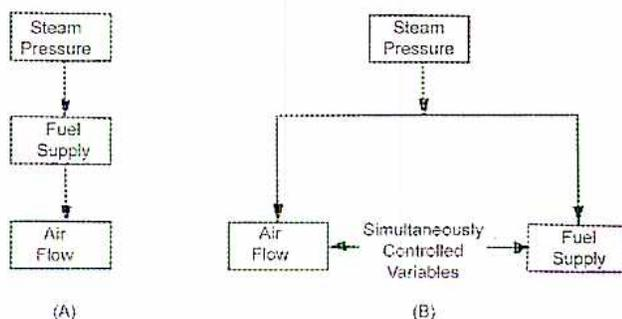
Figure 10
Series and Parallel Controls
Both series and parallel control systems offer simple approaches to combustion control and are applicable for some circumstances. Heating boilers with programmed combustion control systems, such as are used in schools or other small institutions, may utilize on/off or positioning control. Series control is adequate for gas or oil-fired boilers up to approximately 45 000 kg/h of steam flow. Boilers using chain grate or underfeed stokers maintain a considerable reserve of unburned fuel in the furnace, so that accurate
simultaneous adjustments of fuel flow and airflow are not essential. In this case, parallel control is often adequate. For larger and more complex installations, further refinement in the combustion control process is needed, and combined series/parallel systems are more common.
A modification of the series and parallel methods of combustion control involves the application of a correction factor to the fuel or combustion air supply signal. Another signal is used to maintain an appropriate ratio between the two. Fig. 11 illustrates how this is achieved using the steam flow/airflow approach described earlier.
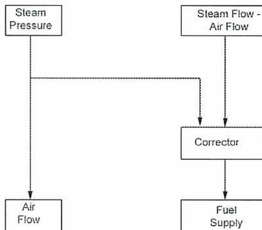
graph TD; SP[Steam Pressure] --> AF[Air Flow]; SP --> CF[Corrector]; SF[Steam Flow - Air Flow] --> CF; CF --> FS[Fuel Supply];
The diagram shows a control system where 'Steam Pressure' is measured and used to control 'Air Flow' directly. Simultaneously, 'Steam Pressure' and 'Steam Flow - Air Flow' are inputs to a 'Corrector' block. The output of the 'Corrector' block is used to control the 'Fuel Supply'.
Figure 11
Correction Factor
In essence, this is a parallel control system with a correction factor used to readjust either airflow (for fuel bed firing) or fuel flow (for suspension firing) to give optimum conditions for safe, efficient combustion. A different strategy for series/parallel control is shown in Figure 12.
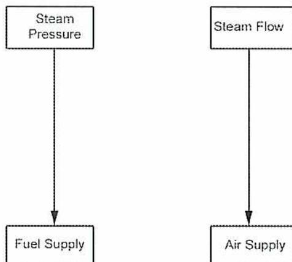
graph TD; SP[Steam Pressure] --> FS[Fuel Supply]; SF[Steam Flow] --> AS[Air Supply];
The diagram shows a control system where 'Steam Pressure' is measured and used to control the 'Fuel Supply' directly. Simultaneously, 'Steam Flow' is measured and used to control the 'Air Supply' directly. This represents a series/parallel control strategy.
Figure 12
Series / Parallel Control
In this arrangement, the steam pressure signal is used to regulate the fuel supply, and the steam flow signal is used to regulate the quantity of combustion air. The strategy behind this arrangement is that the heat liberated from the burned fuel determines the quantity of steam generated, and the balance between this and the load demand is indicated by the steam pressure.
Explain turbine-following, boiler-following, and integrated combustion control systems.
A combustion control system must attain a balance between the energy that is input into the boiler and the energy that is withdrawn. When a steam generator is built as part of an integrated electrical generating unit, there is a further and closely related need to balance the boiler's output with the demand for steam at the turbine inlet, which is a function of the generator's electrical output in megawatts. There are various strategies for designing the boiler's combustion control loops to accomplish this goal. The two control variables that are used for boiler and turbine control systems in these strategies are Megawatt output and steam pressure (throttle pressure at the turbine inlet).
One strategy that is used is turbine-following. This means that the boiler leads the turbine in responding to changing load or conditions, and the turbine response then lags behind the boiler response. The main control variable for boiler combustion is generator megawatts which is the first variable to change when load demand changes. The turbine control loop's control variable is steam pressure which changes proportionally after the firing rate has changed. This is shown in Fig 13.
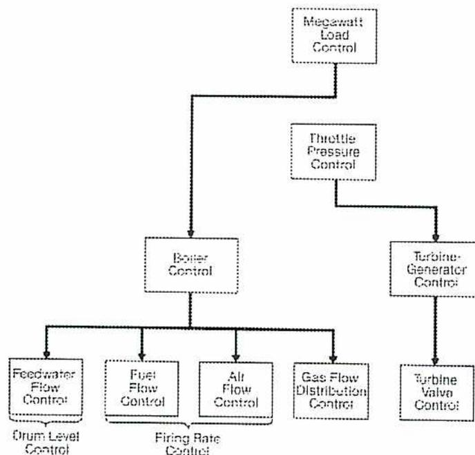
graph TD; ML[\"Megawatt Load Control\"] --> BC[\"Boiler Control\"]; ML --> TP[\"Throttle Pressure Control\"]; TP --> TGC[\"Turbine-Generator Control\"]; BC --> FFC[\"Feedwater Flow Control\"]; BC --> FFC; BC --> FFC; BC --> FFC; TGC --> TVC[\"Turbine Valve Control\"]; FFC --- D[\"Drum Level Control\"]; FFC --- F[\"Fuel Flow Control\"]; FFC --- A[\"Air Flow Control\"]; FFC --- G[\"Gas Flow Distribution Control\"]; FFC --- FRC[\"Firing Rate Control\"]; FRC --- F; FRC --- A; FRC --- G;
The diagram illustrates the control hierarchy for a Turbine-Following system. At the top is the 'Megawatt Load Control' block. This block connects to two paths: one leading to the 'Boiler Control' block and another leading to the 'Throttle Pressure Control' block. The 'Throttle Pressure Control' block then connects to the 'Turbine-Generator Control' block. The 'Boiler Control' block has four output lines leading to 'Feedwater Flow Control', 'Fuel Flow Control', 'Air Flow Control', and 'Gas Flow Distribution Control' blocks. The 'Feedwater Flow Control' block is associated with 'Drum Level Control'. The 'Fuel Flow Control', 'Air Flow Control', and 'Gas Flow Distribution Control' blocks are collectively associated with 'Firing Rate Control'.
Figure 13
Turbine-Following Control
When load is increased, the sensed increase in Megawatt demand causes the boiler controls to increase the firing rate. The resulting increase in steam pressure causes the turbine throttle valves to open, admitting more steam to generate the additional megawatts. When load is decreased, the reverse process occurs.
The advantage of this strategy is that it maintains steam pressure and temperature with little fluctuation. Its disadvantage is that it is rather slow to respond to load changes because of the lag between generator output changes and turbine throttle valve adjustment.
The opposite approach to turbine-following is boiler-following. This means that the turbine leads the boiler in responding to changing load or conditions, and the boiler response then lags behind the turbine response. The main control variable for boiler combustion is steam pressure which is trimmed by steam flow as a feedforward signal. The turbine control loop's control variable is generator megawatts. This is shown in Fig. 14.
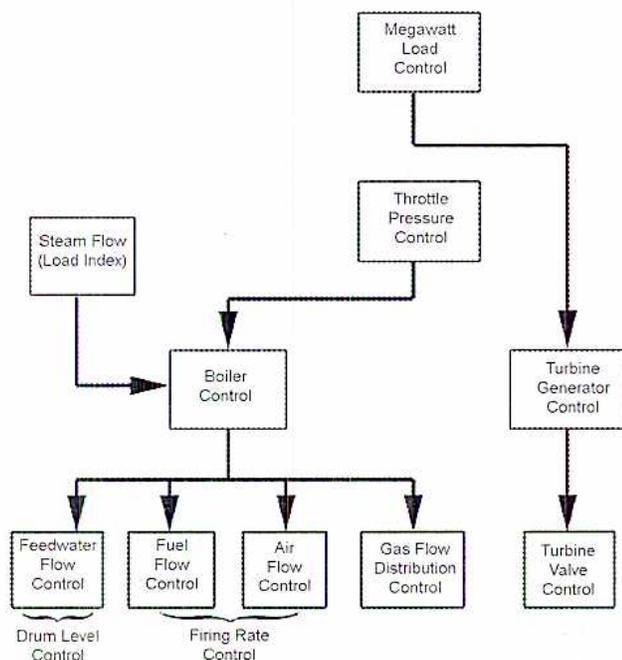
The diagram illustrates the control logic for a boiler-following system. At the top, a 'Megawatt Load Control' block receives an input and sends a signal to a 'Throttle Pressure Control' block. The 'Throttle Pressure Control' block sends a signal to a 'Turbine Generator Control' block, which in turn sends a signal to a 'Turbine Valve Control' block. A 'Steam Flow (Load Index)' block receives an input and sends a signal to a 'Boiler Control' block. The 'Boiler Control' block sends signals to four blocks: 'Feedwater Flow Control', 'Fuel Flow Control', 'Air Flow Control', and 'Gas Flow Distribution Control'. The 'Feedwater Flow Control' block is labeled 'Drum Level Control'. The 'Fuel Flow Control', 'Air Flow Control', and 'Gas Flow Distribution Control' blocks are collectively labeled 'Firing Rate Control'.
Figure 14
Boiler-Following Control
When load is increased, the sensed increase in Megawatt demand causes the turbine throttle valves to open, admitting more steam to the turbine. The resulting decrease in steam pressure causes the boiler control loop to increase the firing rate. When load is decreased, the process is reversed.
The advantage of this strategy is fast response to load changes using the boiler's stored energy before the firing rate is actually changed. Its disadvantage is that steam pressure and temperature are subject to more fluctuation during load changes.
Boiler-following and turbine-following control strategies can be combined to take advantage of the best features of both. This is called integrated or coordinated control and is shown in Fig. 15.
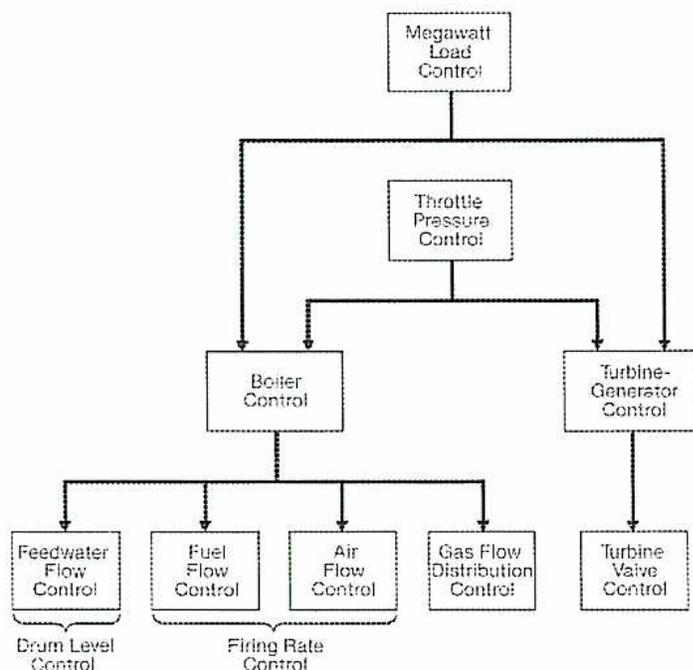
graph TD; ML[Megawatt Load Control] --> TP[Throttle Pressure Control]; ML --> B[Boiler Control]; ML --> TG[Turbine-Generator Control]; TP --> B; TP --> TG; B --> FFC[Feedwater Flow Control]; B --> FRC[Fuel Flow Control]; B --> AFC[Air Flow Control]; B --> GDC[Gas Flow Distribution Control]; TG --> TVC[Turbine Valve Control]; FFC --- D[Drum Level Control]; FRC --- FR[Firing Rate Control];
The diagram illustrates the Integrated Control system hierarchy. At the top is the 'Megawatt Load Control' block. Below it, the 'Throttle Pressure Control' block receives signals from the Megawatt Load Control. Below the Throttle Pressure Control, the 'Boiler Control' and 'Turbine-Generator Control' blocks receive signals. The Boiler Control block is connected to four sub-blocks: 'Feedwater Flow Control' (labeled 'Drum Level Control'), 'Fuel Flow Control' (labeled 'Firing Rate Control'), 'Air Flow Control', and 'Gas Flow Distribution Control'. The Turbine-Generator Control block is connected to the 'Turbine Valve Control' block.
Figure 15
Integrated Control
In this strategy, Megawatt demand and steam pressure both provide signals to both the boiler combustion control loop and the turbine throttle valves. In each control loop, the two input signals can be biased differently, so that the integrated control can be set up to emphasize the characteristics of either turbine-following or boiler-following. For example, steam pressure can be the main control variable for the turbine throttle valves and achieve the stable steam conditions of turbine-following, while still using the boiler's stored energy to achieve the faster responses of boiler-following. Megawatt demand is then used as a trim signal for the turbine control system.
Fig. 16 shows the relative response times of Megawatt output and steam throttle pressure to load demand changes for the three control strategies. Integrated control offers responses that are between the extremes of the other two approaches.
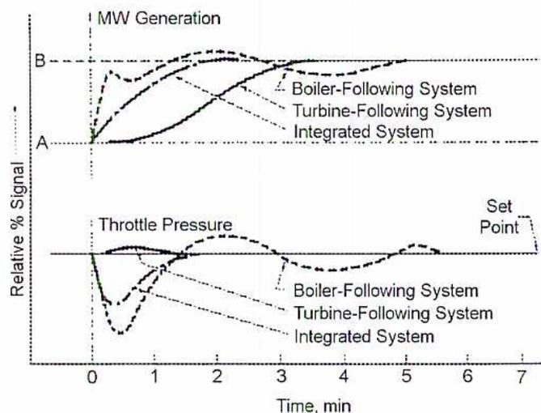
The graph consists of two parts. The top part shows 'MW Generation' on the y-axis (with points A and B) against 'Time, min' on the x-axis (0 to 7). The bottom part shows 'Throttle Pressure' on the y-axis against the same time scale, with a 'Set Point' indicated. Three curves are plotted in each part: a dashed line for 'Boiler-Following System', a dotted line for 'Turbine-Following System', and a solid line for 'Integrated System'. In both cases, the solid line (Integrated System) reaches the target value (B for MW, the Set Point for Throttle Pressure) more quickly than the other two systems.
Figure 16
Response Times Compared
Integrated control is accomplished, in part, using a number of ratio controllers. Each one receives inputs from two different variables and provides an output that ensures the correct ratio, or proportion, is maintained between them. This is shown in Fig. 17.
![Figure 17: Ratio Controllers. A block diagram showing the control system architecture. It starts with 'Megawatt Load Demand' which branches into 'Turbine-Generator Control' and 'Boiler Control'. 'Turbine-Generator Control' leads to 'MW Generation', which then feeds into a 'Ratio Control'. 'Boiler Control' leads to 'Fuel Std Input', which also feeds into the 'Ratio Control'. The 'Ratio Control' output goes to 'Superheater Spray Attemperator Water', which then feeds into another 'Ratio Control'. This 'Ratio Control' output goes to 'Feedwater Flow Control', which feeds into a third 'Ratio Control'. The third 'Ratio Control' output goes to 'Fuel Flow Control', which feeds into a fourth 'Ratio Control'. The fourth 'Ratio Control' output goes to 'Air Flow Control', which feeds into a fifth 'Ratio Control'. The fifth 'Ratio Control' output goes to 'Gas Flow Distributor Control'. Finally, 'Feedwater Flow Control' also feeds into a 'Feeder Speed Control', which feeds into a sixth 'Ratio Control'. The sixth 'Ratio Control' output goes to 'Primary Air Control'.](81a4cbf0b3c4cbc065efdf8f800dadde_img.jpg)
graph TD
MLD[Megawatt Load Demand] --> TGC[Turbine-Generator Control]
MLD --> BC[Boiler Control]
TGC --> MW[MW Generation]
BC --> FSI[Fuel Std Input]
MW --> RC1[Ratio Control]
FSI --> RC1
RC1 --> SW[Superheater Spray Attemperator Water]
SW --> RC2[Ratio Control]
RC2 --> FFC[Feedwater Flow Control]
FFC --> RC3[Ratio Control]
RC3 --> FUC[Fuel Flow Control]
FUC --> RC4[Ratio Control]
RC4 --> AFC[Air Flow Control]
AFC --> RC5[Ratio Control]
RC5 --> GDC[Gas Flow Distributor Control]
FFC --> FSC[Feeder Speed Control]
FSC --> RC6[Ratio Control]
RC6 --> PAC[Primary Air Control]
Figure 17
Ratio Controllers
Another option to integrated control is variable pressure control. Maintaining the turbine throttle valves in the wide open position at all times allows the steam pressure to vary with changes in load. This has the following advantages:
There is, however, a substantial increase in the time needed for system responses to load changes at low loads because of the reduction in boiler energy storage when the steam pressure is reduced.
Describe the operation of purge, fan failure, and flame failure interlock systems.
It is very important to maintain a proper fuel/air ratio in furnace combustion. If the supply of combustion air is not adequate to ensure complete combustion of all fuel, a fuel-rich atmosphere is created. There is a considerable risk of a furnace explosion when the heated fuel reaches a location where additional air is available to supply oxygen for combustion. The importance of avoiding this situation cannot be overemphasized. Every year there are boiler furnace explosions that result in fatalities, injuries, and hundreds of millions of dollars' worth of equipment damage and lost production. Incidents of this nature can be avoided when proper controls, safety devices, interlocks, and operational procedures are in place. Safety interlocks are intended to avoid having fuel introduced to a furnace when adequate combustion air is not available.
Interlock systems are managed by:
One of the most common times for a boiler furnace explosion to occur is during the initial firing as the boiler is started up. This is because of combustible gas or dust remaining within the furnace. For this reason, it is imperative that the furnace be purged of all residual fuel before firing. An airflow is admitted in sufficient quantity and for sufficient time to sweep the entire furnace. For multiple burners, a rule of thumb is to use 25% of the full load airflow for five minutes. These numbers can vary depending on the furnace design and fuel that is in use. Numbers are also quoted based on the volume of air that is circulated in relation to the furnace volume. A guideline that is often used is 25% of full airflow for five volume changes. Single-burner furnaces require a greater purge airflow and time: 70% of full airflow for eight volume changes is typical.
A good practice is to conduct a furnace purge immediately after the fire has been extinguished during a shutdown (called a post purge ). Even if this is done, it is still mandatory to ensure that a proper purge is conducted before the next startup. This is so important that almost all boilers have an interlock which prevents any fuel admission to the furnace until a proper and complete purge has been conducted and the interlock system has detected it.
Nearly all boilers use draft fans with the exception of some very small institutional-sized heating boilers and some newer design firetube heating boilers that use pulses of compressed air for combustion air. Commonly, balanced draft is used with a forced draft fan supplying combustion air to the furnace, and an induced draft fan withdrawing combustion products from the furnace.
If the forced draft fan fails, then the supply of combustion air is interrupted. When this occurs, the fuel supply must be stopped immediately or a fuel-rich atmosphere will result.
If the induced draft fan fails, the furnace pressure rapidly rises, due to the forced draft fan still admitting air. In this situation, the forced draft fan and the fuel supply must be shut off at once.
It is usual to equip the boiler with an interlock system which automatically trips the forced draft fan and fuel supply if the induced draft fan fails. It also shuts off the fuel supply if the forced draft fan fails. The interlock circuitry monitoring the opening of the fan motor breaker or the trip circuit of the turbine if the fan is turbine-driven usually detect fan failure. Induced draft fan monitoring is often backed up by a pressure switch which initiates the interlock if furnace draft exceeds a predetermined safe maximum.
Very large steam generators often have two forced draft fans and/or two induced draft fans with each fan having a capacity of 50% or more of full load. In this case, the interlock system may not be required to trip the fuel if a single fan fails. If one of the two forced draft fans fails, the fuel can be limited to a maximum of 50% of full load flow or whatever load can be handled safely with one fan. If one of the two induced draft fans fails, then there are different options regarding how the interlock works:
If there is only one of either the forced draft or induced draft fans in service and it fails, these options are not available, and the interlock is programmed to shut off all fuel immediately. If the steam generator is part of an electrical generating unit, then the interlock system may also be programmed to begin running down the turbo-generator load until 50% loading is reached, or until an operator intervenes manually. This is achieved by energizing a motorized operator on the turbine stop valves which starts closing them.
When using suspension burning, the burner flame may be extinguished due to a momentary interruption of fuel supply, low fuel pressure, excessive airflow, or furnace instability during sootblowing. When this flame failure, or “flame out,” occurs, the flow of fuel into the furnace must be stopped immediately. It is likely that the incoming fuel will not spontaneously re-ignite and create a fuel-rich atmosphere. The furnace rapidly fills with unburned fuel which can explode.
Smaller boilers that are fired with oil or gas are equipped with a flame detector, a device that is installed for the purpose of sensing a flame failure. If the burner flame goes out, the flame detector shuts off the fuel valve, and it is held closed until a new furnace purge has been initiated and completed.
Some large boilers, which are under the continuous supervision of an operator, are not equipped with flame failure circuits. It is the operator’s responsibility to shut off all fuel immediately in the event of a flame failure. Frequently, television cameras and monitors are used to assist the operator in observing flame conditions in the furnace. Gas analyzers are often used and may be arranged to sound an alarm when combustibles appear in the flue gas as would be the case if a flame failure occurred.
Flame detectors are often unable to discriminate between flame and background radiant energy in furnaces which burn pulverized coal and, in this case, the operator’s continuous supervision is required.
Boilers with fuel beds are not normally subject to flame failure because of the very large fire that they utilize, so flame failure detection is normally not an issue.
Boilers that are equipped with electrostatic precipitators often have a feature in the flame failure interlock which trips power to the precipitator. This is because the precipitator is likely to produce electrical arcing as the unburned fuel passes through it. Arcing is a possible source of reignition for the fuel. A precipitator trip is likely to cause an environmental excursion as raw fuel is admitted to the stack. This is usually considered to be a smaller risk when compared to the likelihood of an explosion.
Describe the operation of flame detectors.
It is critical that failure of a furnace flame is sensed immediately, and the flow of fuel stopped avoiding a potential furnace explosion. For boilers that are not subject to continuous supervision, and for many that are, this function is managed automatically by an interlock circuit which uses a flame detector device to determine if the flame is stable at any given moment.
Flames produce many forms of radiant energy, such as heat and various wavelengths of visible and invisible light. The technologies used for flame detection are based on discerning some particular form or series of wavelengths of this radiant energy, or the ions that are generated along with it. Different fuels produce flames with different proportions of each wavelength. Real-time combustion conditions also affect the nature of the energy produced. For this reason, some types of detectors are better suited to certain applications and certain fuels than others are.
Table 1 shows the relative amounts of different forms of radiated light for some common fuels.
Table 1
Radiant Energy From Common Fuels
| Fuel | Radiant Energy | ||
|---|---|---|---|
| Infrared | Visible | Ultraviolet | |
| Oil (Atomized) | High | High | Medium |
| Gas (Premix with air) | Low | Low | High |
| Gas (without premix) | Medium | Medium | Medium |
| Coal (pulverized) | High | High | Medium |
Flame detectors need to be mounted in such a way that they have an unobstructed direct view of the burner being monitoring, with a minimal exposure to other radiant heat sources in the vicinity (such as refractory or other burners). Different types and models of flame detectors have different tolerances for heat. They must be mounted where the environment is cool enough or have a compressed air cooling system provided. Air cooling has the added advantage of keeping dust and dirt out of the detectors' electronic circuits.
Flame detectors are not used to judge or quantify the quality or stability of an existing flame. There is no established consistent relationship between the magnitude of their output signal and any particular qualities of the flame they detect. Rather, a flame detector's output should be considered an on/off type of signal indicating only whether a flame exists or not.
Photoelectric cells, or visible light detectors, have two electrodes inside an evacuated glass tube. Light that strikes the plate-shaped cathode causes it to emit electrons which migrate to the anode. A current is induced when visible light is present, and this current is detected in an external circuit to verify a flame is present.
A related device uses a cadmium sulphide coating on an insulating plate. Exposure to visible light causes the cadmium sulphide's electrical resistance to drop substantially. A voltage is applied to this resistor such that current only flows when visible light has dropped the resistance. This current is detected inferring the presence of a flame.
Photoelectric tubes have some disadvantages. They can be deceived by interference from other burners in the vicinity of the burner they are monitoring or by heat radiating from hot refractory. They are also less reliable when gas fuel is being used because it has a different colour spectrum from other fuels. These disadvantages usually limit the use of photoelectric tubes to single-burner oil-fired furnaces. The detector must be located and mounted in such a way that it is not exposed to stray or ambient visible light such as daylight.
Ultraviolet Detectors use two electrodes made of similar material, either tungsten or molybdenum. Ultraviolet light which contacts the electrodes causes electrons to migrate between them creating a measurable electric current. Because the electrode material is sensitive only to ultraviolet light, it is not deceived by hot refractory or furnace walls which radiate light that is more in the red end of the spectrum.
Ultraviolet detectors are usable with all fuels but are very well suited to gas firing because the hydrogen in the fuel gas generates a large amount of ultraviolet radiation when it is burned. Ultraviolet detectors need to be located so they are not exposed to the spark from an electric ignitor. The igniter also radiates ultraviolet energy which the detector could incorrectly interpret as a flame.
These detectors use a material, lead sulphide, which is sensitive to infrared light. Infrared light causes the material's resistance to drop measurably, and this drop in resistance is used to infer the presence of a flame.
Infrared detectors can be deceived by hot refractory or furnace walls indicating a flame where none exists. They are suited to single burners, and to coal or oil fuels. They are not as well suited for gas flames which produce less infrared radiation in proportion to their overall radiant output.
A lead sulphide cell can be used to sense the frequency of flicker of a flame, and is sometimes called a flicker sensor or flicker device. The frequency must be greater than 10 cycles per second to be detected which ensures that hot refractory cannot be mistaken for a flame. Frequency detection is suited to both gas and oil firing and is one of the best choices for coal firing.
Gas Ionization detectors sense ions that are released during the combustion process by measuring the combustion gas's conductivity. This creates a measurable current flow in the detector. Frequency detection of the flame's flicker is normally incorporated as a verifying signal because the degree of conductivity of the gas varies as the flame flickers. Gas ionization detectors are suited for all fuels, and are known for their rugged and maintenance free construction.
A rectifier rod, or flame rod, is a rod which an external AC electrical supply energizes. Exposure to flame causes the rod to rectify the AC current into DC current. External measuring circuits are used to detect the DC current initiating a signal that flame has been detected. Because the flame rod is inserted directly into the flame, the material used must withstand high temperatures. A specialty alloy called Kanthal is commonly used.
Rectifier rods do not work properly in an oil-fired furnace, and are restricted to gas firing. They can withstand temperatures up to approximately 1350°C but are usually not recommended for use at temperatures greater than 815°C. Because of their temperature limitation, they are suited for small burners only. In larger applications, they are well suited for use with pilots but not the main burners.
Describe, using a sketch, a typical programming sequence for a packaged boiler control system.
Some packaged boilers are designed and intended for quick installation into heating plants or small industrial plants where they can be placed into service with a minimal requirement for operator supervision. To accomplish this goal, part of their packaging usually includes an automated control system which manages all of the combustion, furnace draft, and feedwater control processes. This can be a microprocessor based control system, much like a programmable logic controller, that has been programmed to interact with all of the boiler's components and auxiliaries to provide maximum safety and optimum efficiency during startup, normal operation, and shutdown. An operator pushbutton or automatic external contact device, such as a pressure switch in the steam header may initiate boiler startup and shutdown. More sophisticated control packages also provide automatic control of flue gas recirculation and excess oxygen levels.
Packaged boiler feedwater control may use a single element control system based on steam drum level although two and three element controls are also used. Boiler blowdown is often automated as part of the control package, using either total dissolved solids or conductivity of the boiler water as the controlled variable or blowing down for preset amounts of time at preset time intervals.
The degree of sophistication of control loops varies depending on boiler size and manufacturer. However, it is common for proportional, integral, and derivative functions to be used for both combustion control and feedwater control.
All codes, standards, and legislation that are applicable to boiler operation must be adhered to in the programming of automated operation. These requirements become even more important because programmed packaged boilers are normally operated with less monitoring and intervention by operational staff than are non-automated boilers. Additionally, insurance underwriters have their own standards and limitations for boiler automation which must be followed. Packaged boiler manufacturers normally ensure that their entire package, including the automated controls, conforms to Underwriters Laboratories (UL) and National Fire Protection Agency (NFPA) requirements.
Programmed control sequences may be set up to be recycling or non-recycling. Recycling controls automatically attempt to restart the boiler after a shutdown or trip and are common in applications where the boiler is normally required to start up and shut down routinely and frequently without intervention. Non-recycling controls do not attempt a restart of a boiler until an operator has manually depressed a pushbutton. This has the advantage of not attempting to restart a boiler if it has tripped due to some failure that poses a safety risk. In some applications, insurance underwriters may require non-recycling control.
Fig. 18 illustrates the automated control panel of a packaged watertube boiler. The panel includes not only the control circuitry but also gauges for steam pressure and furnace draft, a pushbutton to initiate the boiler startup cycle, lights that indicate the progress through startup, and an alarm annunciator. Firetube boilers and hot water boilers may have much smaller panels with less external instrumentation. The panel may be mounted on the burner, on an adjacent wall, or on a stand on the floor nearby. The newest designs may feature a touch screen for the operator interface in place of pushbuttons and conventional gauges.
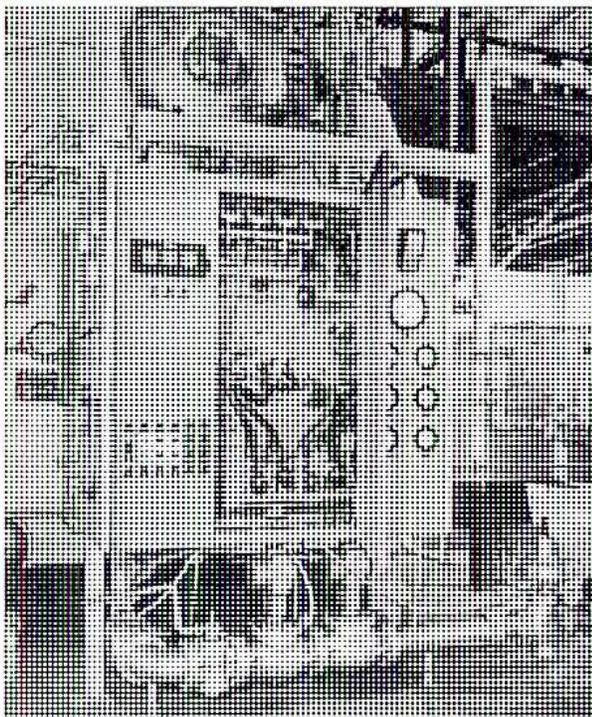
Figure 18
Boiler Control Panel
In plants with multiple boilers installed, it is possible to have a single programmed control system that monitors and controls all the boilers. An alternative approach is to have a programmed controller for each boiler with a main sequencing controller that determines which boilers should be in service and initiates the startups and shutdowns as needed.
The plant requirements, fuel in use, boiler type and design, and burner type and design determine the exact sequence the automated controls follow. Typical steps in the startup sequence are as follows:
Another feature that may be included in the sequence is a timed steam line warm-up. In this case, the boiler outlet stop valve is gradually opened automatically to provide a timed warm up period.
Fig. 19 illustrates the logic diagram for a packaged boiler controller, the Fireye E110.
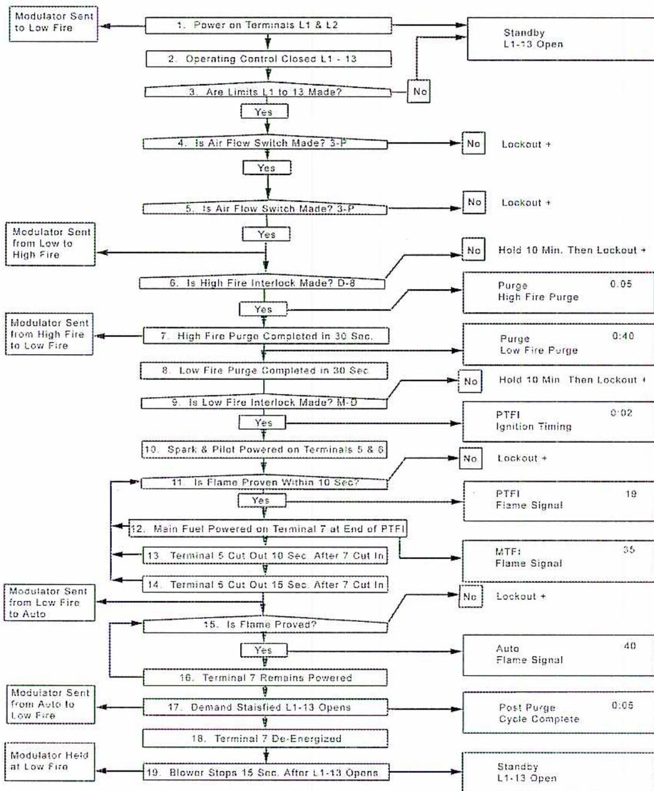
| Step | Logic / Action | Output / Signal |
|---|---|---|
| 1 | Power on Terminals L1 & L2 | Modulator Sent to Low Fire; Standby L1-13 Open |
| 2 | Operating Control Closed L1 - 13 | |
| 3 | Are Limits L1 to 13 Made? | No: Standby L1-13 Open; Yes: Step 4 |
| 4 | Is Air Flow Switch Made? 3-P | No: Lockout +; Yes: Step 5 |
| 5 | Is Air Flow Switch Made? 3-P | No: Lockout +; Yes: Step 6 |
| 6 | Is High Fire Interlock Made? D-8 | No: Hold 10 Min. Then Lockout +; Yes: Step 7 |
| 7 | High Fire Purge Completed in 30 Sec. | Modulator Sent from High Fire to Low Fire; Purge High Fire Purge 0:05; Purge Low Fire Purge 0:40 |
| 8 | Low Fire Purge Completed in 30 Sec. | No: Hold 10 Min. Then Lockout +; Yes: Step 9 |
| 9 | Is Low Fire Interlock Made? M-D | No: Hold 10 Min. Then Lockout +; Yes: Step 10 |
| 10 | Spark & Pilot Powered on Terminals 5 & 8 | No: Lockout +; Yes: Step 11 |
| 11 | Is Flame Proven Within 10 Sec? | No: Lockout +; Yes: Step 12 |
| 12 | Main Fuel Powered on Terminal 7 at End of PTFI | PTFI Flame Signal 19 |
| 13 | Terminal 5 Cut Out 10 Sec. After 7 Cut In | MTFI Flame Signal 35 |
| 14 | Terminal 5 Cut Out 15 Sec. After 7 Cut In | No: Lockout +; Yes: Step 15 |
| 15 | Is Flame Proved? | No: Lockout +; Yes: Step 16 |
| 16 | Terminal 7 Remains Powered | Auto Flame Signal 40 |
| 17 | Demand Satisfied L1-13 Opens | Modulator Sent from Auto to Low Fire; Post Purge Cycle Complete 0:05 |
| 18 | Terminal 7 De-Energized | |
| 19 | Blower Stops 15 Sec. After L1-13 Opens | Modulator Held at Low Fire; Standby L1-13 Open |
Figure 19
Packaged Boiler Logic Diagram
Describe the typical limiting devices and alarms for a packaged boiler combustion system.
Packaged boiler automation can only be accomplished if proper devices are in place to monitor and ensure safe operation at every step of the control program sequence. Each device may initiate an alarm to warn operators of an abnormality, override the control system to correct an unsafe situation, force a boiler shutdown sequence to begin, or initiate an immediate emergency trip of the boiler. Where an alarm is the result, there may be two levels of alarms to warn operators as an abnormal situation gets worse. If a shutdown or trip is the consequence, there is often an alarm which sounds as a parameter becomes abnormal and before it reaches the critical level.
Such devices include:
Additional indications that may be provided on a combustion control panel include the following:
B2.7
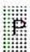
A small square icon with a grid pattern, possibly a logo or a placeholder.